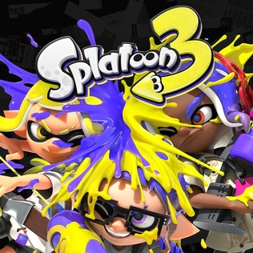

Wat is Splatoon 3?
is a third-person shooter video game developed and published by Nintendo for the Nintendo Switch. Like its predecessors in the Splatoon series, the game consists of competitive online multiplayer (PvP and PvE) alongside a story-driven single-player mode. It was announced via Nintendo Direct on 17 February 2021, and more details were shared on 24 September 2021, with details on the co-op mode shared on 9 February 2022. The game was released on 9 September 2022 and received generally favorable reviews from critics.
Waar vind ik meer info?
klik je hier om naar Inkpedia te gaan. Je vind er meer info over de game, het verhaal, karakters, ...
Waarop kan ik splatoon spelen?
- NintendoSwitch (Splatoon 2&3)
- Wiiu (Splatoon)
kleine weetjes
- Producer: Hisashi Nogami
- Splatoon is een serie van 3 games
- Splatoon 3 released: 9 September 2022